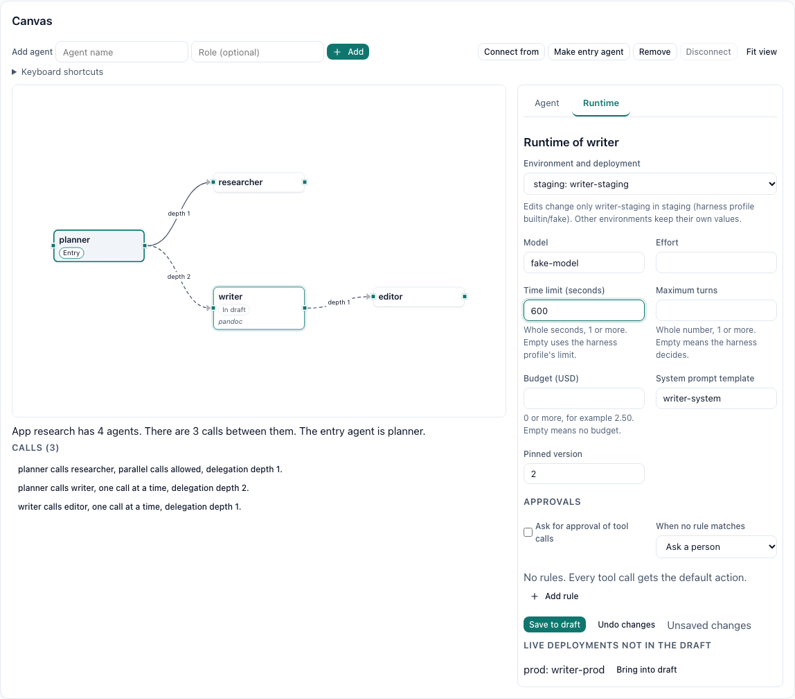
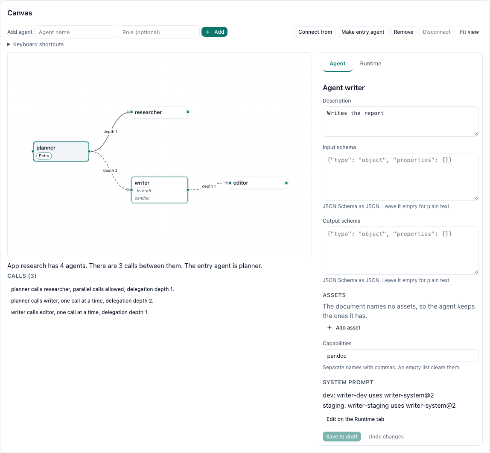

Harness profiles are data
Executable, argument templates, environment, files, prompt delivery, MCP config format, and output parser. Built-ins cover Claude Code, Codex, Mux, Gemini CLI, opencode, and pi; clone one and edit it without a release.
Garrison runs Claude Code, Codex, Mux, Gemini CLI, opencode, pi, and any command-line agent described by a harness profile as managed, multi-tenant services on workers you operate. Build agentic apps in Garrison Agent Studio, promote them from dev to prod, and call them over REST, MCP, or A2A.
$ curl -s -X POST $API/agents/research-orchestrator/invoke \
-H "Authorization: Bearer $TOKEN" \
-d '{"input":"Compare three vector databases","wait":true}'
# run tree
research-orchestrator Succeeded rev 7 · prod
├─ fan-out group join All · 3 of 3
│ ├─ researcher Succeeded worker-04
│ ├─ researcher Succeeded worker-11
│ └─ researcher Succeeded worker-07
├─ writer Succeeded files/overview.md
└─ doc-converter Succeeded files/overview.pdfMeasured on test clusters and a single workstation with the deterministic fake harness, as recorded in SCALING.md and the scale and recovery report. Real throughput depends on your harnesses, database, and workers.
Scale
Workers pull work. Control-plane replicas share state through PostgreSQL. Add either one and nothing else has to change: no worker is ever addressed by the control plane, and no worker ever touches the database.
Measured, not promised
3 control-plane replicas and 10 workers with 32 slots each, PostgreSQL 17, one workstation, fake harness at 20 events per second per run.
From SCALING.md, 2026-10-14. At 100 runs/s offered, throughput plateaued near 50 runs/s on that host.
Garrison Agent Studio
Describe the app you want to the agent architect, or draw it on the canvas. Both edit the same draft. Garrison shows you the diff, dry-runs it, and applies it only after someone approves.
What it does
Garrison does not replace your agent. It configures, authorizes, dispatches, reviews, and records it, so the agent can be shared safely.
Executable, argument templates, environment, files, prompt delivery, MCP config format, and output parser. Built-ins cover Claude Code, Codex, Mux, Gemini CLI, opencode, and pi; clone one and edit it without a release.
System prompts, task wrappers, delegation instructions, and tool descriptions are versioned with a live preview. Each run records the versions it used.
Bind an agent to a harness, prompts, MCP servers, secrets, placement, and limits. Split traffic across deployments to compare harnesses or models.
Lease-fenced run tokens let an agent invoke the agents its policy allows, within depth limits, never with more permission than the person who started it.
Tool calls that need permission go to Garrison. Rules settle most; the rest wait in an approvals inbox, and a timeout denies by default.
Chain agents into stages that pass results and artifacts forward. A person can approve a stage, send it back with feedback, or reject it.
A shared folder per conversation. Every turn and every delegated agent reads and writes it, with version history and downloads for the person using the app.
Versioned skills, reference files, and document templates, pinned by revisions and placed where each harness expects them, such as Claude Code skills folders.
Agents, MCP tools, and host programs described in one shape, with input and output schemas and cost and latency hints from real runs.
Start agents or pipelines on a cron schedule or from an HMAC-signed webhook, and receive signed notifications when runs finish, fail, or wait.
Tenants, users, credentials, roles, scoped assignments, encrypted secrets, audit records, and request history. Cross-tenant reads return 404.
Why a run can or cannot be placed, queue and execution time, tokens, cost, and tool calls, through Prometheus, OpenTelemetry traces, logs, and Grafana.
How it works
The control plane decides what runs and how, down to the command line. Workers connect out, run exactly what they are handed, and report back.
A caller invokes an agent. Garrison checks Execute on that agent, picks a deployment by weight, validates overrides, and queues the run.
A worker long-polls and claims the run with an atomic compare-and-set that bumps a fencing epoch. Two workers can never both own it.
The control plane resolves revision, assets, file space, command line, environment, parser, and MCP servers into one ExecutionSpec.
The worker places files, checks MCP servers, starts the harness, and streams parsed events back. Callers follow along over SSE or WebSocket.
The result is stored and the run token revoked. If a worker dies, its lease expires and the run is requeued, and a stale worker is fenced out.
The studio canvas
Agents are boxes, calls are arrows labelled with their delegation depth, and every edit goes to the server as a draft change. Everything the mouse does also works from the keyboard.


Captured from the dashboard with the fake-harness example draft. More about the studio
How it compares
These tools solve different layers, and several of them work well under or next to Garrison. The table shows what each one gives you out of the box for running agents.
| Capability | Garrison | KubernetesJobs, Deployments | Google AXwith Agent Substrate | ServerlessLambda and FaaS | microVM sandboxesFirecracker-based and similar | Dockercontainers, Compose |
|---|---|---|---|---|---|---|
| Runs Claude Code, Codex, Gemini CLI, Mux, opencode, pi, or any CLI agent | YesBuilt-in harness profiles; any CLI by configuration | PartialRuns any image; harness wiring is yours | PartialCustom runner images | PartialPackage it yourself within runtime limits | PartialInstall it in the sandbox | PartialRuns the image you build |
| Long-running, stateful agent sessions | YesConversations resume the harness session; checkpoints resume on another worker | PartialPods run long; session state is yours | YesSuspend and resume tasks | NoPer-invocation time limits (15 minutes on Lambda) | YesLong-lived sandboxes; snapshot features vary | PartialContainers stay up; state is yours |
| Isolation per run | YesPod per run with egress allowlists; no microVM boundary of its own | YesPods, namespaces, network policies | YesgVisor or microVM sandboxes | YesProvider-managed function isolation | YesHardware-virtualized sandboxes | PartialContainer isolation on a shared kernel |
| Multi-tenancy, RBAC, and audit for agent calls | YesTenants, roles, scoped grants, audit, request history | PartialRBAC for cluster objects, not agent calls | PartialResources scoped by atespace | PartialCloud IAM per function | PartialAccount and API-key access | NoNot provided |
| Delegation and fan-out between agents | YesPolicy-bounded delegation, fan-out up to 64, gather with join policies | NoNot provided out of the box | PartialLarge numbers of tasks; agent-to-agent policy is yours | PartialCompose functions with a workflow service | NoNot provided out of the box | NoNot provided |
| Shared conversation state and files | YesFile spaces shared by every turn and delegated agent | PartialVolumes you mount and manage | PartialWorkspaces with repos, MCP servers, skills | NoStateless; bring external storage | PartialSandbox filesystem for its lifetime | PartialVolumes |
| Human approvals and review gates | YesTool-call approvals inbox, pipeline review, approved deploys | NoNot provided out of the box | NoNot provided out of the box | NoNot provided out of the box | NoNot provided out of the box | NoNot provided |
| Design, versioning, and promotion of agents | YesStudio, immutable revisions, dev to prod promotion and rollback | PartialImage rollouts, not agent revisions | PartialDeclarative task manifests | PartialFunction versions and aliases | PartialSandbox templates | PartialImage tags |
| Tokens, cost, and latency per run | YesTime to first token, tokens, cost, tool calls by agent and model | NoResource metrics only | NoNot provided out of the box | PartialBilling per invocation, not per token | PartialUsage metering for sandboxes | NoNot provided |
| Protocols for callers | YesREST, MCP, A2A, WebSocket | APIKubernetes API | APIgRPC and the ax CLI | APIHTTP triggers and events | APIPlatform SDKs and APIs | APIDocker API |
| Where it runs | Self-hostedDocker Compose or any Kubernetes | AnywhereAny cluster | KubernetesA cluster with Agent Substrate | CloudThe provider's cloud | VariesHosted; some self-hostable | AnywhereAny Docker host |
Based on each project's public documentation as of October 2026, including the AX README. Platforms change; check their docs for current features.
Choose it to schedule and operate containers. Garrison runs on it, and its KubernetesJob executor uses it for per-run pods. Kubernetes alone does not know what an agent, a harness session, or a delegation policy is.
Choose them for declarative task orchestration over gVisor or microVM sandboxes on Kubernetes, with suspend and resume. Garrison focuses on named, reusable agents, tenant-scoped APIs, delegation, approvals, and a studio.
Choose them for short, stateless handlers that scale to zero. Coding agents run for minutes to hours and keep sessions and workspaces between turns, which runs into invocation time limits.
Choose them when the main requirement is a strong execution boundary for untrusted code. A sandbox gives you the environment; Garrison gives you agent configuration, authorization, dispatch, review, and results.
Choose it to package and run one agent on one machine. Garrison itself starts with Docker Compose, then adds tenants, queues, approvals, and history on top.
Choose it to operate a fleet of reusable agents under one tenant and policy model, from design in the studio to scale-out on workers you own.
Use cases
An orchestrator fans out to researchers, a writer drafts in the shared file space, and a converter produces a PDF the end user downloads from the app.
Give products and internal tools a Claude Code or Codex agent with workspaces, secrets, and limits set by the operator, not the caller.
Draft, review, and revise in pipeline stages, with a person approving between stages and risky tool calls held until someone decides.
Nightly reports on a cron schedule, triage that starts from a signed webhook, and a signed notification when the work is done.
One fleet of workers for many teams, each with its own agents, secrets, permissions, quotas, and history.
Two deployments of one agent on different harnesses or models, traffic split by weight, results compared on the Analytics page.
Get started
Every option seeds tenant default with administrator admin@garrison and generates a random password. There is no default password.
1. Clone and start
$ git clone https://github.com/jchristn/Garrison && cd Garrison/docker
$ ./update.sh # generates keys into .env, builds the images, starts the stack; Windows: update.bat2. Sign in
Open http://127.0.0.1:8080 and sign in as admin@garrison with the password update.sh printed. It is also GARRISON_ADMIN_PASSWORD in docker/.env, where optional harness credentials go too.
A control plane, two workers, PostgreSQL, the dashboard, and Prometheus, Grafana, Tempo, Loki, and Alloy. Needs Docker with Compose v2, about 10 GB of disk, and 8 GB of memory for Docker.
K3S in Docker with k3d (macOS and Windows)
$ git clone https://github.com/jchristn/Garrison && cd Garrison
$ brew install k3d # or see https://k3d.io for other platforms
$ k3d cluster create garrison --api-port 127.0.0.1:6550 -p "127.0.0.1:8080:80@loadbalancer"
$ K3D_CLUSTER=garrison k8s/scripts/deploy-k3s.sh --buildK3S on a Linux host, or minikube
$ k8s/scripts/deploy-k3s.sh --build
$ k8s/scripts/deploy-minikube.shCheck it, reach it, sign in
$ k8s/scripts/smoke-test.sh # invokes a fake-harness agent and checks it succeeds
$ k8s/scripts/port-forward.sh # REST, MCP, and dashboard on 127.0.0.1:8700, 8701, and 8080
$ kubectl -n garrison get secret garrison-secrets -o jsonpath='{.data.admin-password}' | base64 --decode; echoNamespace garrison with one server, two workers, the dashboard, PostgreSQL, and a bootstrap Job. The scripts build the images, generate secrets, apply the overlay, and wait for every rollout.
Needs kubectl, openssl, and Docker. Harness keys such as ANTHROPIC_API_KEY are optional; the smoke test needs none.
Kustomize production overlay
garrison-db with keys host, port, database, username, and password.garrison-tls for your host name, for example with cert-manager.garrison.example.com in overlays/production/ingress.yaml.latest.$ k8s/scripts/generate-secrets.sh
$ kubectl apply -k k8s/overlays/productionOr the Helm chart
$ k8s/scripts/generate-secrets.sh
$ helm install garrison k8s/helm/garrison -n garrison -f k8s/helm/garrison/values-k3s.yaml --set smokeTest.enabled=true
$ helm test garrison -n garrisonThe chart ships values-minikube.yaml, values-k3s.yaml, and values-production.yaml to match the overlays.
Three control-plane replicas spread across zones and nodes, an HPA from 2 to 10 replicas, disruption budgets, four workers with 50 GiB workspaces, and an ingress-nginx Ingress with TLS.
Bring a managed PostgreSQL. MCP clients connect at https://<your host>/mcp.
Ask questions, share what you are building, and help shape what comes next.